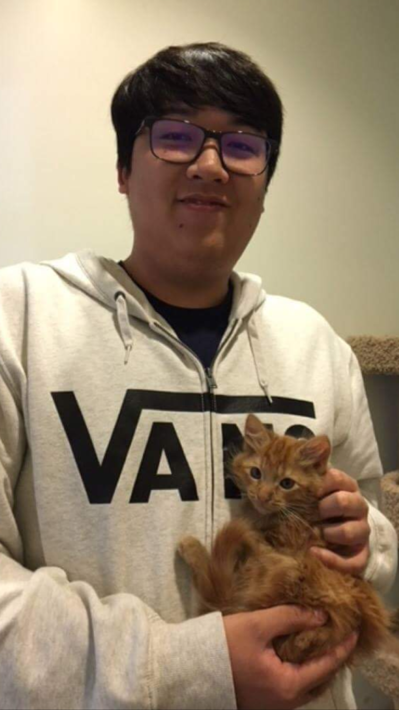
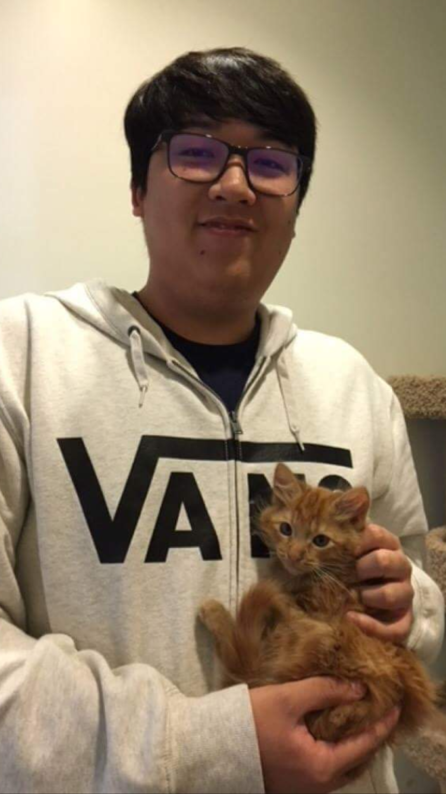

Lab 2 - HTML & CSS Starter
Hello World
This is all about us Danielle Kraljevski and Zhendong Jiang.
Danielle has been drawing seven months old and looks forward to
learning how to incorporate this class into creating a portfolio.
California born and raised and can not wait to get back on Santa
Cruz's campus.
Zhendong or Zhen, use he/him pronouns. He's currently majoring
in AGPM, and learning coding on his own. So far, he's enjoying it.
He has two cats. This is one of them, and his name is Kupo.
 
